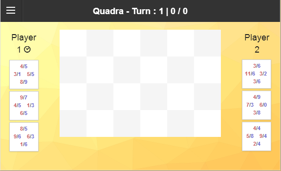
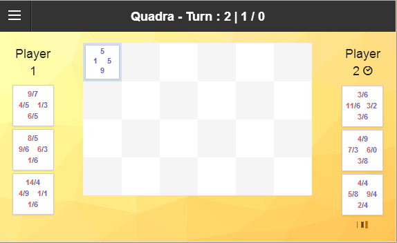
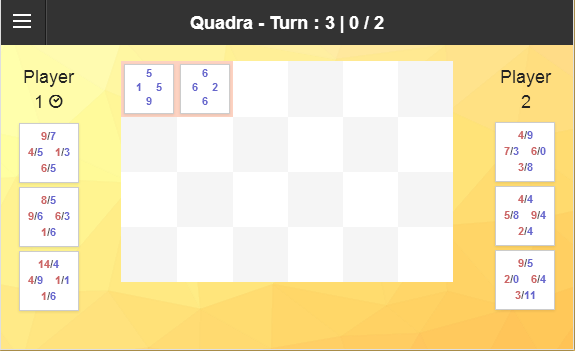
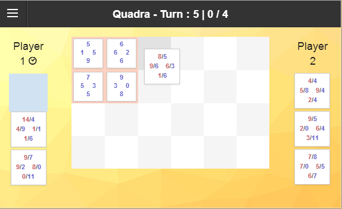
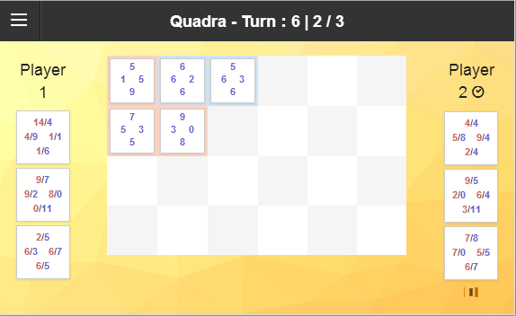
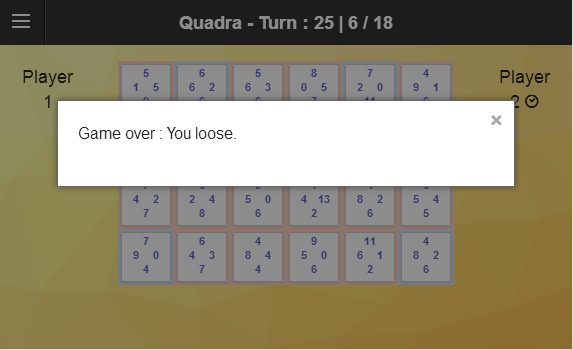

-

Each players have to place a card turn by turn (according to the icon).
-

Each card is controlled by its own player. Blue for you...
-

And red for the opponent.
-

A card try to win other ones by fighting her red values against the blue ones.
-

As you can see.
-

When the board is full, the player with the more cards under his control wins.